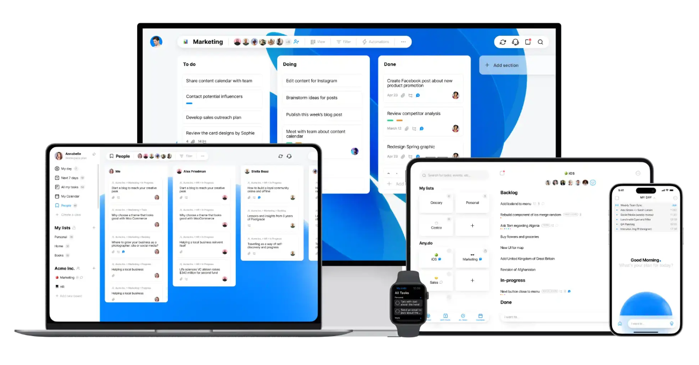
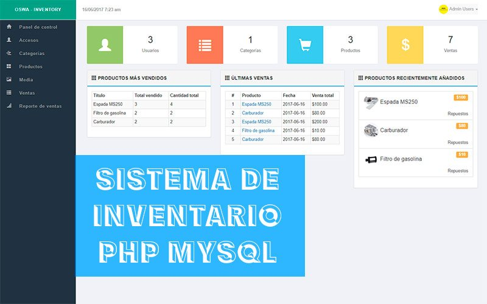

Gestor de Tareas Móviles
Este proyecto fue una aplicación desarrollada en Android Studio con Kotlin. Permite al usuario gestionar tareas, asignar colores, y filtrar por estado. Se utilizó ViewModel, RecyclerView y una arquitectura limpia. Ideal para mejorar la productividad personal.
Sistema Web de Inventario
Sistema web desarrollado con HTML, CSS y JavaScript que permite a pequeñas empresas gestionar productos, stock, y ventas. Incluye funciones como búsqueda, filtrado por categoría y exportación de reportes.
Servidor HTTP 0.9 con funcionalidades dinámicas
Servidor web minimalista desarrollado en Python que sirve archivos estáticos y permite operaciones especiales como la simulación de la Torre de Hanoi mediante rutas personalizadas que devuelven JSON. Diseñado para explorar protocolos de red y manejo de solicitudes.